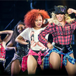
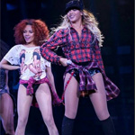

| Home | Destiny's Child | Sasha Fierce | Mrs. Carter |
|
SashaFierce
|
Beyonce's Backup Dancers Miss. KsynIt's been five years since Miss Ksyn first auditioned for Beyoncé as a backup dancer. Since then, Tanesha "Ksyn" Cason (Miss Ksyn is her stage name, pronounced Kay-Sin) has traveled with the singer on two world tours and built up a side career as a beauty blogger. "I have a duffel bag of makeup," she told the Cut. "I've gotten lipstick in places you didn't even know." While in Atlanta for the On the Run tour, the Cut caught up with Miss Ksyn, who told us about her beauty routine, how she touches up between sweaty dance numbers, and the importance of red Ruby Woo lipstick to Beyoncé's show. Here she is, in her own words. In the beginning, everyone’s mother wants to put their daughter in ballet class. That’s how I started. Then I started doing African dance and fell in love with that. I started doing hip-hop at 12 or 13, and then just kept doing it. Auditioning for Beyoncé was kind of hectic. One of my dancer friends and I were coming off the road [from touring] with Shontelle. We got off Amtrak and were trying to do makeup and stuff on the train. I was just like, We’re going to go for it and see what happens. I didn’t have too much time to think. For the audition, I went for a clean, fresh face with a bit of attitude and pizazz. When I dance, I try to portray a lot through facial expressions, so I did a cat eye and red lip. In the last round, she walked in. I was like, Wow, I’ve never had an artist come in the last round. She hired me and then kept on hiring me. I booked with my first gig with Beyoncé in 2009 when she did "Single Ladies" in concert. Then I went on to do the Billboard Awards and Oprah with her. And from then on, the Super Bowl and two weeks later, we were in rehearsals for the Mrs. Carter show.
Ashley Everett To the left, to the left...if you’ve watched a Beyoncé performance in the last seven years (and tried to memorize them for later go-to dance moves), then you’ve seen Ashley Everett, the fierce redhead bumping and grinding to the left of Queen Bey on stage. A promising dance student and prospective Juilliard School student at the age of 17, Everett changed her destiny of being just a dancer by accepting Bey’s offer to dance back-up instead of attending the prestigious performing-arts school. Now at 24, she runs the dance world as Beyonce’s dance captain and lead dancer. |